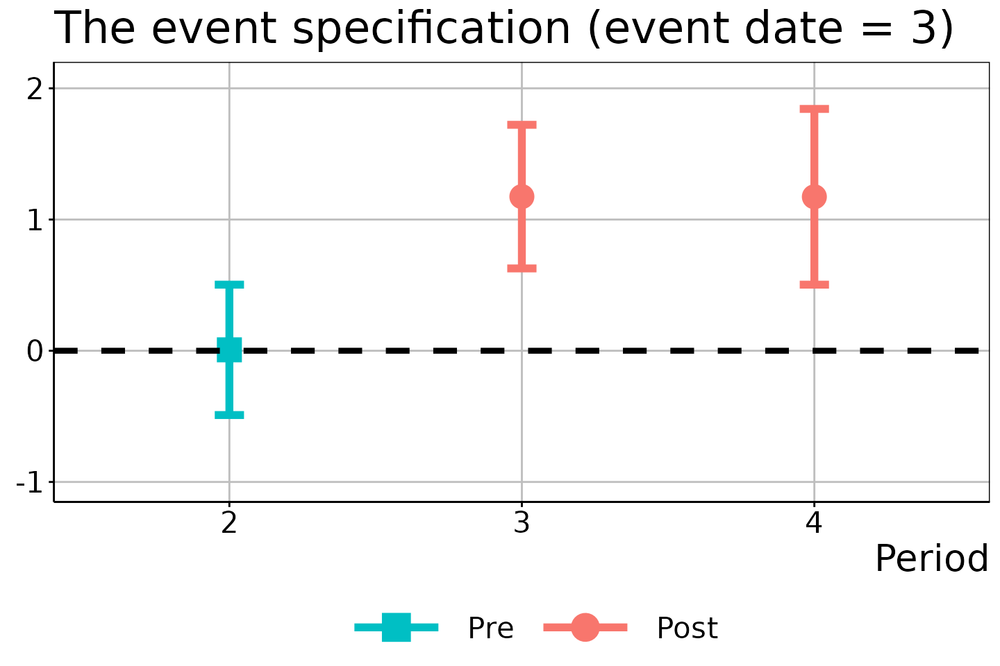
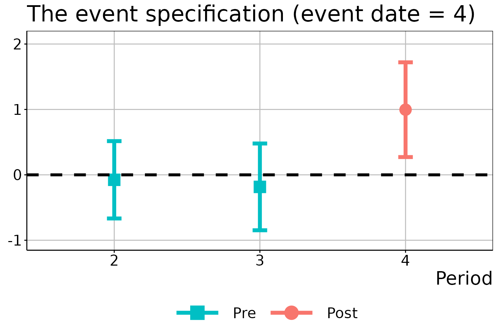
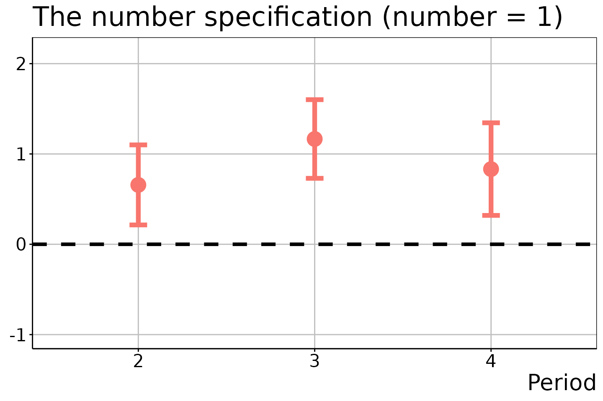
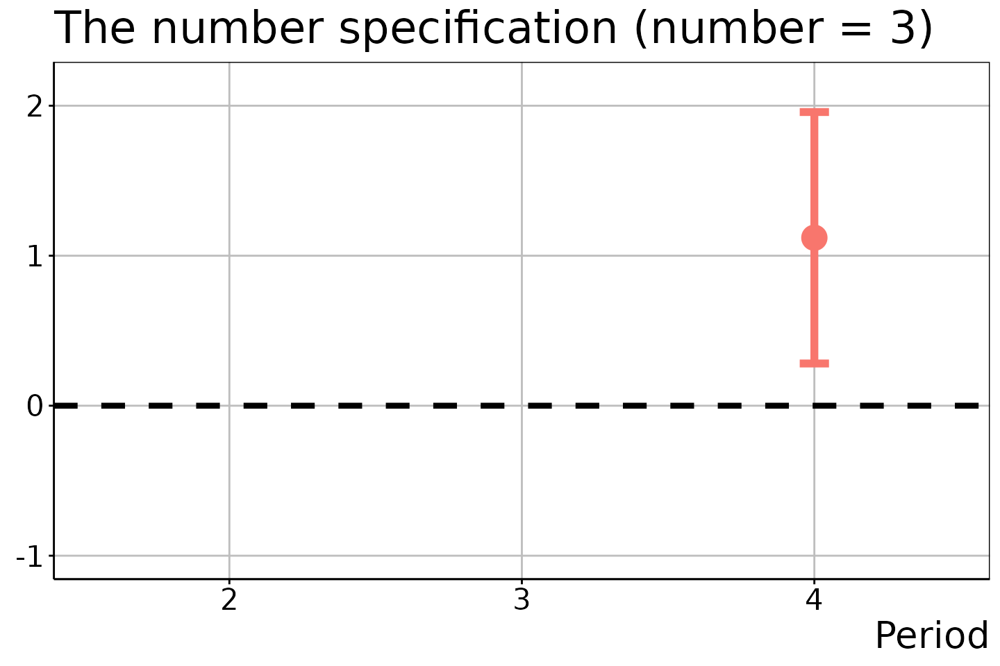

Introduction
The didet package provides tools for differences-in-differences (DiD) estimation when the treatment variable of interest may be non-binary and its value may change in each time period. The package implements the doubly robust estimation of the average treatment effect for movers using the concept of effective treatment. The methods are developed by Yanagi (2023) “An effective treatment approach to difference-in-differences with general treatment patterns”.
Installation
Get the package from GitHub:
# install.packages("devtools") # if necessary
devtools::install_github("tkhdyanagi/didet", build_vignettes = TRUE)Package Function
The didet package provides the following function:
-
didet(): DiD estimation with general treatment patterns using the concept of effective treatment.
Arguments
The didet() function has the following arguments:
-
yname: The name of the outcome variable -
dname: The name of the treatment variable -
tname: The name of the time period -
idname: The name of the unit index -
xformla: A formula for the unit-specific covariates to be included. It should be of the formxformla = ~ X + Z. Default isxformla = ~ 1. -
data: A data.frame of balanced panel data (long format) -
specification: A character specifying the effective treatment function. Options are “once”, “event”, “number”, and “aggregate”. Default is “event”. -
alp: The significance level. Default is 0.05. -
nboot: The number of bootstrap repetitions. Default is 1000.
Returns
The didet() function returns a list that contains the
following elements:
-
ATEM: A data.frame that collects the estimation results for \(\mathrm{ATEM}(t, s, e)\) and \(\mathrm{ATEM}(t, s, r, e)\). -
mover: A data.frame that collects the estimation results for the probabilities of being movers. -
stayer: A data.frame that collects the estimation results for the probabilities of being stayers. -
figure: A list that contains the ggplot2 figures for \(\mathrm{ATEM}(t,s,e)\) and \(\mathrm{ATEM}(t, s, r, e)\).
Example
We begin by generating artificial balanced panel data using the
datageneration() function.
# Generate artificial balanced panel data
# N: The number of the cross-sectional units
# S: The length of the time series
set.seed(1)
data <- didet::datageneration(N = 1000, S = 4)
head(data)
#> id period Y D X once event number
#> 1 1 1 -0.1819699 0 -0.6264538 0 0 0
#> 2 1 2 2.2096505 1 -0.6264538 1 2 1
#> 3 1 3 1.4318668 0 -0.6264538 1 2 1
#> 4 1 4 2.8392303 1 -0.6264538 1 2 2
#> 5 2 1 -0.6832054 0 0.1836433 0 0 0
#> 6 2 2 4.9496969 0 0.1836433 0 0 0The event specification
The DiD estimation using the event specification:
# DiD estimation
did_est <- didet::didet(yname = "Y",
dname = "D",
tname = "period",
idname = "id",
xformla = ~ X,
data = data,
specification = "event",
alp = 0.05,
nboot = 1000)The ATEM estimation results are:
# DiD estimation
did_est$ATEM
#> t s r e est SE CIL CIU
#> 1 2 1 NA 2 0.657302600 0.1722136 0.1723468 1.1422584
#> 2 3 1 NA 2 1.235559338 0.1910280 0.6976221 1.7734966
#> 3 4 1 NA 2 1.240879514 0.2869105 0.4329359 2.0488231
#> 4 3 2 2 3 0.006868939 0.1764401 -0.4899886 0.5037265
#> 5 3 2 NA 3 1.174624991 0.1943357 0.6273731 1.7218769
#> 6 4 2 NA 3 1.173320326 0.2377890 0.5037034 1.8429372
#> 7 4 3 2 4 -0.075686385 0.2099782 -0.6669878 0.5156151
#> 8 4 3 3 4 -0.184022148 0.2355352 -0.8472922 0.4792479
#> 9 4 3 NA 4 0.996096640 0.2571780 0.2718800 1.7203132The rows with r equal to NA present the
estimation results for \(\mathrm{ATEM}(t, s,
e)\), that is, the estimation results for “post-treatment
periods”. For example, the first row shows the estimation results for
\(\mathrm{ATEM}(2, 1, 2)\), the average
treatment effect in period 2 (\(t =
2\)) for movers who are comparison units in period \(1\) (\(s =
1\)) and whose event date is period 2 (\(e = 2\)). The rows with r
unequal to NA correspond to the estimation results for
\(\mathrm{ATEM}(t, s, r, e)\), that is,
the estimation results for “pre-treatment periods”, which should be
approximately 0 under the parallel trends assumption.
The resulting figures are:
# Event date = 2
did_est$figure$e2
# Event date = 3
did_est$figure$e3
# Event date = 4
did_est$figure$e4
In these figures, the circles/squares and bars correspond to the ATEM estimates and \(1 - \alpha\) uniform confidence bands, with the x-axis indicating the time period \(t\).
The once specification
The DiD estimation using the once specification:
# DiD estimation
did_est <- didet::didet(yname = "Y",
dname = "D",
tname = "period",
idname = "id",
xformla = ~ X,
data = data,
specification = "once",
alp = 0.05,
nboot = 1000)The ATEM estimation results are:
# DiD estimation
did_est$ATEM
#> t s r e est SE CIL CIU
#> 1 2 1 NA 1 0.6573026 0.1626075 0.2683060 1.046299
#> 2 3 1 NA 1 1.2173456 0.1593353 0.8361769 1.598514
#> 3 4 1 NA 1 1.1711503 0.2263077 0.6297673 1.712533The resulting figure is:
did_est$figure$e1The number specification
The DiD estimation using the number specification:
# DiD estimation
did_est <- didet::didet(yname = "Y",
dname = "D",
tname = "period",
idname = "id",
xformla = ~ X,
data = data,
specification = "number",
alp = 0.05,
nboot = 1000)The ATEM estimation results are:
# DiD estimation
did_est$ATEM
#> t s r e est SE CIL CIU
#> 1 2 1 NA 1 0.6573026 0.1686379 0.2142356 1.100370
#> 2 3 1 NA 1 1.1656749 0.1657341 0.7302370 1.601113
#> 3 4 1 NA 1 0.8323819 0.1951119 0.3197590 1.345005
#> 4 3 1 NA 2 1.2696071 0.2119726 0.7126857 1.826529
#> 5 4 1 NA 2 1.3969331 0.2810274 0.6585820 2.135284
#> 6 4 1 NA 3 1.1196405 0.3190303 0.2814431 1.957838The resulting figures are:
# Number of treatment adoptions = 1
did_est$figure$e1
# Number of treatment adoptions = 2
did_est$figure$e2
# Number of treatment adoptions = 3
did_est$figure$e3
In the last two figures, the estimation results for \(t = 2\) and \(t \in \{ 2, 3 \}\) are suppressed because no units experienced the two and three times of treatment adoptions in these time periods.
Aggregation
We can obtain a single aggregation estimate by taking the time series mean of the ATEM estimates obtained from the once specification, as follows:
# DiD estimation
did_est <- didet::didet(yname = "Y",
dname = "D",
tname = "period",
idname = "id",
xformla = ~ X,
data = data,
specification = "aggregate",
alp = 0.05,
nboot = 1000)The ATEM estimation results are:
# DiD estimation
did_est$ATEM
#> t s r e est SE CIL CIU
#> 1 NA NA NA 1 1.015266 0.124448 0.7722924 1.25824No figure is available in this case.
References
- Yanagi, T., 2023. An effective treatment approach to difference-in-differences with general treatment patterns. arXiv preprint arXiv:2212.13226. Link